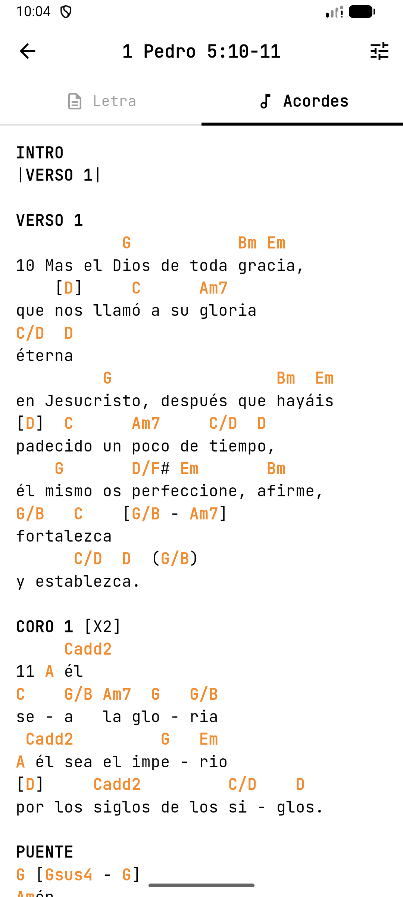
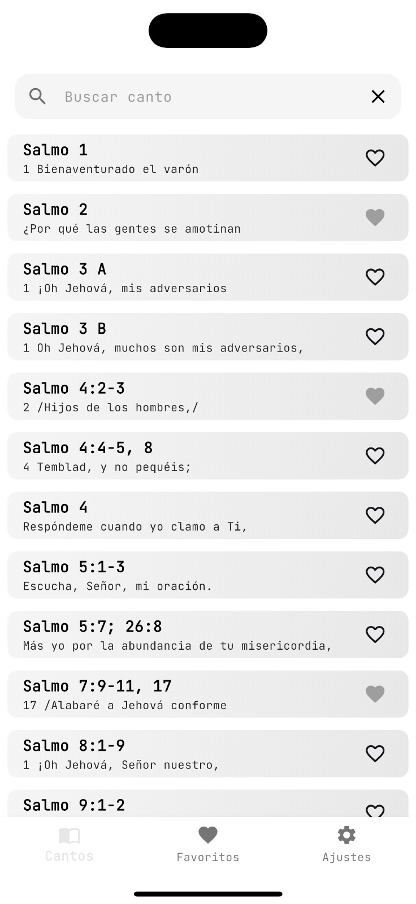
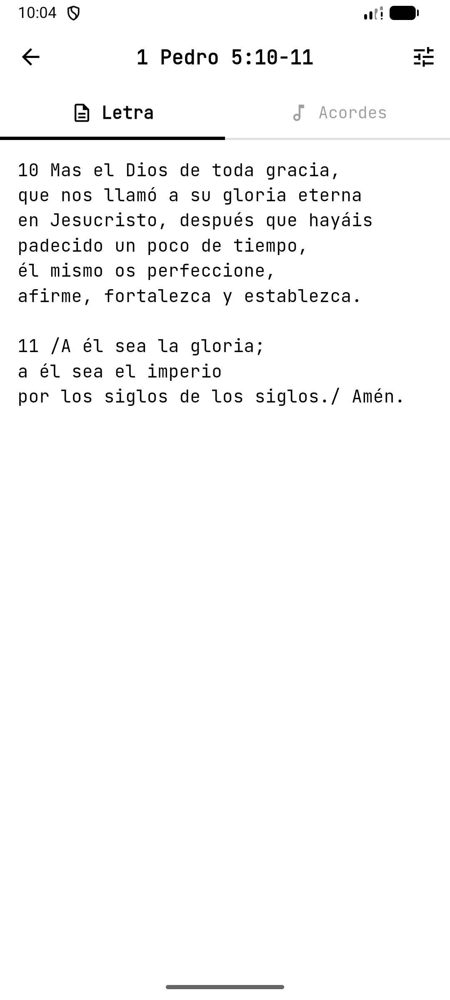

Chord View
See the chords of each song clearly.
A digital hymnal designed for worship, study, and music practice. Browse scripture-based songs, read clean lyrics, and follow chord progressions in a calm interface made for real church use.


See the chords of each song clearly.

Read complete lyrics in an uncluttered layout.
If you found a bug, have a suggestion, or need help using the app, you can reach out directly. The app is intentionally simple, so support should feel simple too.
Yes. Hymns, lyrics, and chords are available locally on the device so they can be used during service or practice without internet.
No. Cantando con Gracia does not require sign-up and does not ask for personal information to access the core experience.
The interface includes dedicated views for chord guidance and lyric reading so musicians and singers can focus on the same song in different ways.
Yes. It follows device typography behavior and keeps the layout uncluttered to make on-stage or rehearsal reading easier.
The lyrical content and musical scores used in Cantando con Gracia are composed exclusively of musical adaptations of Biblical passages from the Reina Valera 1960 (RVR1960) version.
These texts are presented as Holy Scripture for devotional and liturgical use and are considered public domain in that religious context. Every song in the application is based on direct transcription or adaptation of biblical verses rather than modern third-party copyrighted song catalogs.
The purpose of the app is to support worship, practice, and scripture-centered singing with a respectful and accessible digital format.